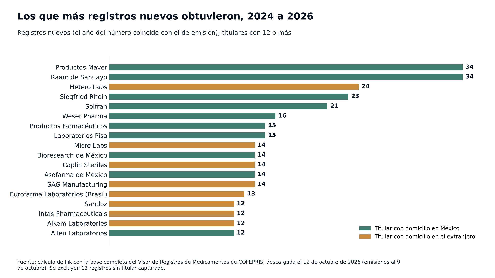
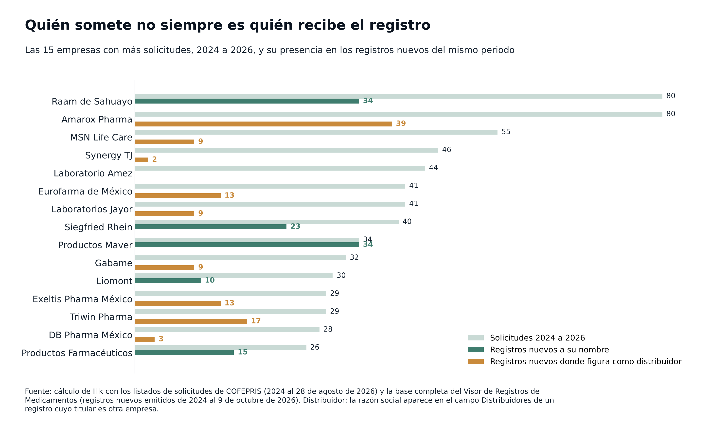
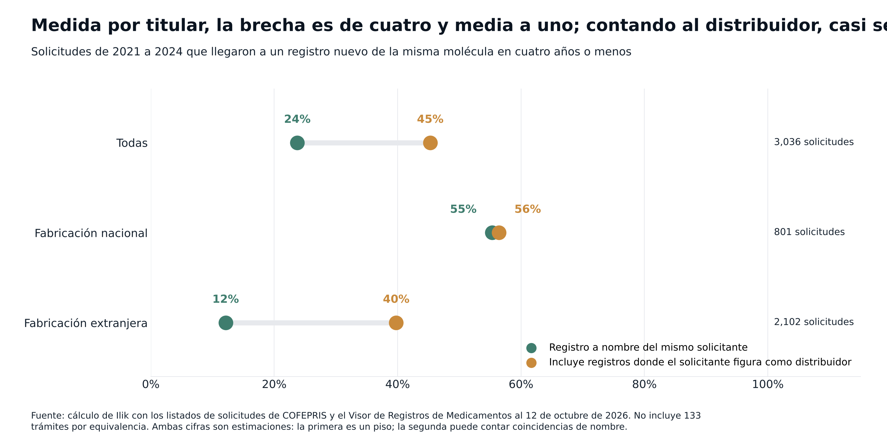
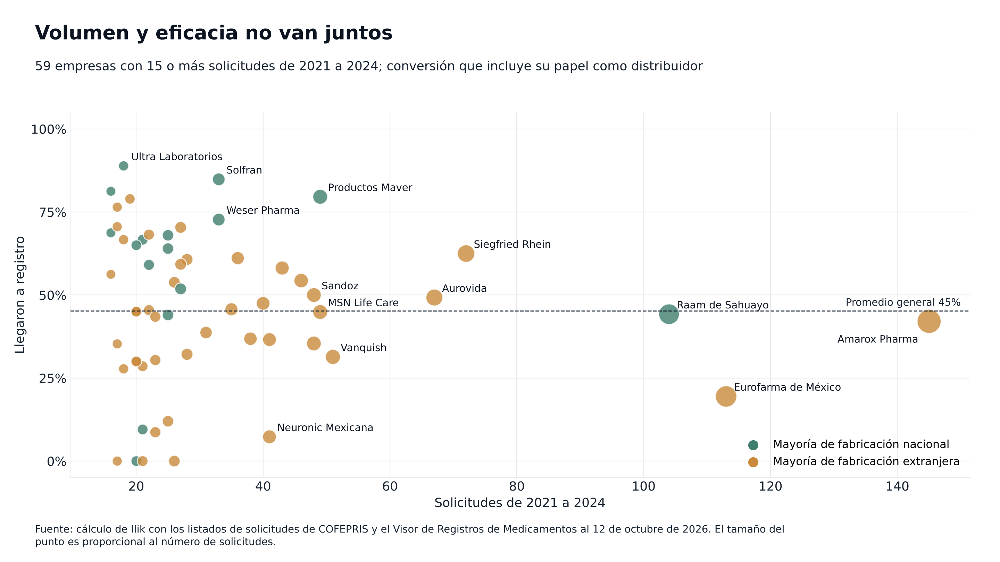
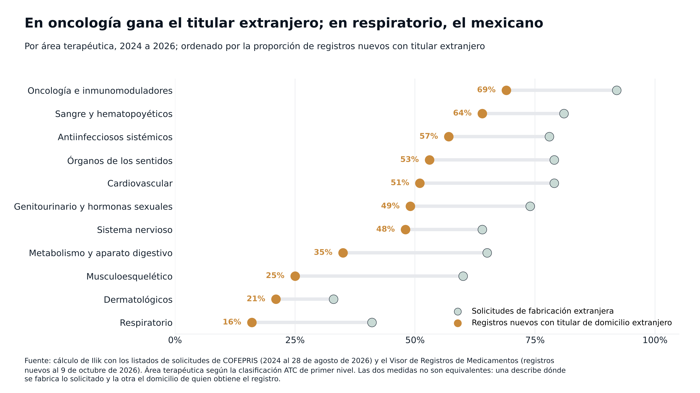

Observatorio / Medicamentos y COFEPRIS
Medicamentos y COFEPRIS¿Quién gana la carrera por registrar medicamentos en México?
Desde 2024, 275 empresas pidieron a COFEPRIS registrar medicamentos y ninguna concentra más de 4% de las solicitudes. Pero contar trámites engaña: quien somete y quien se queda con el registro muchas veces no son la misma empresa, y al cruzar las dos listas cambia el podio.
Entre enero de 2024 y agosto de 2026, ninguna empresa presentó más solicitudes de registro sanitario de medicamentos ante COFEPRIS que Amarox Pharma: 80. Hasta el 9 de octubre de 2026, la comisión no había emitido un solo registro nuevo a su nombre.12
Laboratorio Raam de Sahuayo presentó las mismas 80 solicitudes y obtuvo 34 registros nuevos. Nadie obtuvo más; solo Productos Maver lo iguala.
Mismo volumen de entrada, resultado opuesto. La explicación está en la letra chica de cada registro. Amarox no aparece como titular en ninguno, pero sí como distribuidor en 39 de los registros nuevos de esos años. En 23 el titular es Hetero Labs, un fabricante con domicilio en India que es, a su vez, el titular extranjero con más registros nuevos en México en el periodo.
Esto importa a quien compra medicamentos: el nombre en una cotización puede ser el del distribuidor, no el del dueño del registro ni el de la planta. Para saber quién entra de verdad al mercado hay que cruzar la lista de quién somete con la de quién obtiene. Lo hicimos con los listados de solicitudes de COFEPRIS y su base completa de registros.
Ninguna empresa concentra la entrada
Entre 2024 y 2026 sometieron solicitudes 275 empresas. La más activa tiene 3.9% del total y las diez primeras suman 24.2%. El índice de concentración HHI da 114 puntos. Para las autoridades de competencia de Estados Unidos, un mercado empieza a ser moderadamente concentrado a partir de 1,000.3
Entre las quince que más someten hay dos perfiles claros. Nueve presentan casi solo producto de fabricación extranjera (96% o más de sus solicitudes). Tres, casi solo nacional.
| Empresa | Solicitudes | Genéricos | Biocomparables | Moléculas nuevas | Fabricación extranjera |
|---|---|---|---|---|---|
| Laboratorio Raam de Sahuayo | 80 | 80 | 0 | 0 | 4% |
| Amarox Pharma | 80 | 77 | 3 | 0 | 100% |
| MSN Life Care | 55 | 55 | 0 | 0 | 100% |
| Synergy TJ | 46 | 44 | 2 | 0 | 100% |
| Laboratorio Amez | 44 | 44 | 0 | 0 | 0% |
| Laboratorios Eurofarma de México | 41 | 29 | 4 | 8 | 98% |
| Laboratorios Jayor | 41 | 40 | 1 | 0 | 100% |
| Siegfried Rhein | 40 | 34 | 0 | 6 | 60% |
| Productos Maver | 34 | 34 | 0 | 0 | 0% |
| Gabame | 32 | 32 | 0 | 0 | 100% |
| Laboratorios Liomont | 30 | 20 | 4 | 6 | 50% |
| Exeltis Pharma México | 29 | 19 | 0 | 10 | 100% |
| Triwin Pharma | 29 | 29 | 0 | 0 | 100% |
| DB Pharma México | 28 | 28 | 0 | 0 | 96% |
| Productos Farmacéuticos | 26 | 22 | 0 | 4 | 65% |
En la salida pasa lo mismo. Los 1,021 registros nuevos con titular capturado se reparten entre 273 titulares; los diez primeros suman 20.6% y el HHI es de 93. Ni al someter ni al obtener hay una empresa que domine.
Los que obtienen el registro son otros

| Titular | Registros nuevos 2024 a 2026 | Domicilio |
|---|---|---|
| Productos Maver | 34 | México |
| Laboratorio Raam de Sahuayo | 34 | México |
| Hetero Labs | 24 | India |
| Siegfried Rhein | 23 | México |
| Laboratorios Solfran | 21 | México |
| Weser Pharma | 16 | México |
| Productos Farmacéuticos | 15 | México |
| Laboratorios Pisa | 15 | México |
| Micro Labs | 14 | India |
| Bioresearch de México | 14 | México |
| Caplin Steriles | 14 | India |
| Asofarma de México | 14 | México |
| SAG Manufacturing | 14 | España |
| Eurofarma Laboratórios | 13 | Brasil |
| Sandoz | 12 | Austria |
| Intas Pharmaceuticals | 12 | India |
| Alkem Laboratories | 12 | India |
| Allen Laboratorios | 12 | México |
Solo cuatro empresas aparecen en las dos listas: Raam de Sahuayo, Productos Maver, Siegfried Rhein y Productos Farmacéuticos. Las cuatro tienen domicilio en México y someten producto hecho aquí en proporciones que van de 35% a 100%. Liomont se queda cerca, con 10 registros.
La lista cambia si se piensa en grupos y no en razones sociales. Annora Pharma, otra empresa india, sumó 10 registros nuevos, y la calificadora CARE Ratings la describe como propiedad total de Hetero Labs.4 Juntas suman 34, igual que Maver y Raam.
La nacionalidad de los titulares también puede estar cambiando. De los registros nuevos de 2024 a 2026, 54.5% tiene titular con domicilio en México. Fue 58% en 2024 y 59% en 2025; en lo que va de 2026 baja a 46%. Falta un trimestre para saber si el año cierra igual.
Quien somete no siempre es quien recibe

La figura deja ver dos modelos de negocio.
En el primero, la misma empresa somete y se queda con el registro. Así operan Raam de Sahuayo, Productos Maver, Siegfried Rhein, Liomont y Productos Farmacéuticos.
En el segundo, una empresa con domicilio en México hace el trámite, el registro sale a nombre de un fabricante extranjero y la mexicana figura como distribuidora. Amarox Pharma aparece así en 39 registros nuevos: 33 son de Hetero Labs y Annora Pharma, y los otros seis, de Aspiro Pharma, Hetero Biopharma y Naprod Life Sciences. Triwin Pharma, en 17, sobre todo de Sichuan Huiyu Pharmaceutical y de Caplin Steriles. Eurofarma de México, en 13, todos de Eurofarma Laboratórios, de Brasil. Exeltis Pharma México, en 13, doce de ellos de Laboratorios León Farma y Laboratorios Liconsa. MSN Life Care, en 9, todos de MSN Laboratories.
En algunos casos el vínculo corporativo está documentado fuera de COFEPRIS. Además de lo que dice CARE Ratings sobre Annora,4 una empresa británica llamada Amarox se presenta como filial del grupo Hetero.5 No encontramos un documento que diga lo mismo de la razón social mexicana Amarox Pharma. Lo que sí muestra la base de COFEPRIS es que distribuye registros de Hetero y de Annora.
Hay un tercer perfil, más chico, que parece ser el del gestor regulatorio que tramita por cuenta de otros. Inteligencia en Soluciones Regulatorias presentó 36 solicitudes entre 2016 y 2026, todas de fabricación extranjera, y su nombre no aparece como titular ni como distribuidora en ninguno de los 14,949 registros de la base.
Laboratorio Amez es un caso aparte. Sus 44 solicitudes son de 2025 y 2026, todas de genéricos hechos en México, y todavía no tiene registros. No sorprende: entre la solicitud y el registro, la mediana ronda los 19 meses.
Menos de una de cada cuatro solicitudes termina a nombre de quien la pidió
COFEPRIS no publica qué pasó con cada solicitud, así que lo reconstruimos. Para cada una de las 3,036 solicitudes de 2021 a 2024 buscamos un registro nuevo de la misma molécula emitido en los cuatro años siguientes, con dos criterios.

Si se exige que el registro esté a nombre de la misma empresa que lo pidió, llega 23.7%. Si también se cuentan los registros donde esa empresa figura como distribuidora, la cifra sube a 45.3%. En ambos casos, la mediana entre la solicitud y el registro ronda los 20 meses.
Casi toda la diferencia entre las dos medidas viene de la fabricación extranjera:
| Fabricación | Solicitudes 2021 a 2024 | Registro a nombre del solicitante | Incluyendo su papel de distribuidor |
|---|---|---|---|
| Nacional | 801 | 55.3% | 56.4% |
| Extranjera | 2,102 | 12.1% | 39.8% |
| Todas, incluidas 133 por equivalencia | 3,036 | 23.7% | 45.3% |
Con la medida estricta, una solicitud nacional parece cuatro veces y media más exitosa que una extranjera. Con la amplia, la ventaja se reduce a 1.4 a 1. La mayor parte de esa brecha sale de cómo se reparten los papeles de titular y distribuidor, y no necesariamente de que COFEPRIS rechace más lo importado.
La ventaja nacional que queda no se explica con estos datos. Puede haber más rechazos, más desistimientos o registros a nombre de empresas que no figuran ni como solicitantes ni como distribuidoras.
El año de la solicitud también pesa. Con la medida amplia, las de 2024 llegan a 31.1%, contra 46% a 53% de las de 2021 a 2023: muchas todavía no han tenido tiempo de convertirse en registro.
Someter mucho no garantiza obtener

Entre las 59 empresas con 15 o más solicitudes de 2021 a 2024, las que más convierten no son las que más someten. La tabla muestra una selección.
| Empresa | Solicitudes 2021 a 2024 | Llegaron a registro | Fabricación extranjera |
|---|---|---|---|
| Ultra Laboratorios | 18 | 89% | 0% |
| Laboratorios Solfran | 33 | 85% | 18% |
| Productos Maver | 49 | 80% | 0% |
| Weser Pharma | 33 | 73% | 48% |
| Ulsa Tech | 17 | 71% | 53% |
| Siegfried Rhein | 72 | 62% | 56% |
| MSN Life Care | 49 | 45% | 100% |
| Laboratorio Raam de Sahuayo | 104 | 44% | 0% |
| Amarox Pharma | 145 | 42% | 100% |
| Laboratorios Eurofarma de México | 113 | 19% | 100% |
| Neuronic Mexicana | 41 | 7% | 100% |
De las empresas con 40 solicitudes o más, solo dos pasan de 60%: Productos Maver, que fabrica todo en México, y Siegfried Rhein, con fabricación mixta. Raam de Sahuayo, el mayor solicitante nacional, convierte menos de la mitad de lo que somete. Eurofarma de México somete mucho y convierte poco, aunque sí figura como distribuidora en 13 registros recientes; Neuronic Mexicana casi no aparece. O sus registros salen a nombre de empresas que la base no liga con ellas, o sus solicitudes no han prosperado.
Por área terapéutica, el podio vuelve a cambiar
En ninguna de las once áreas terapéuticas principales hay un dueño claro. El titular que más registros nuevos obtuvo en cada una tiene entre 3 y 13, y los tres primeros juntan entre 12% y 42% de los registros del área.
Lo que sí cambia de un área a otra es quién gana.

En oncología e inmunomoduladores, la segunda área con más solicitudes, 92% de lo que se pide se fabrica fuera de México, y 69% de los registros nuevos queda a nombre de un titular con domicilio en el extranjero. Hetero Labs encabeza con 10. Sangre y antiinfecciosos siguen la misma línea.
En el otro extremo está respiratorio. Ahí 84% de los registros nuevos tiene titular con domicilio en México, y Allen Laboratorios suma 10 de 70. Dermatológicos (79%) y musculoesquelético (75%) van por el mismo camino. Son áreas de genéricos de uso masivo, donde el laboratorio que fabrica aquí todavía se queda con el registro.
| Área terapéutica | Solicitudes | Fabricación extranjera | Registros nuevos | Titular en México |
|---|---|---|---|---|
| Metabolismo y aparato digestivo | 369 | 65% | 179 | 65% |
| Oncología e inmunomoduladores | 340 | 92% | 160 | 31% |
| Sistema nervioso | 297 | 64% | 139 | 52% |
| Cardiovascular | 165 | 79% | 86 | 49% |
| Musculoesquelético | 161 | 60% | 72 | 75% |
| Antiinfecciosos sistémicos | 161 | 78% | 86 | 43% |
| Sangre y hematopoyéticos | 104 | 81% | 39 | 36% |
| Respiratorio | 93 | 41% | 70 | 84% |
| Genitourinario y hormonas sexuales | 86 | 74% | 45 | 51% |
| Órganos de los sentidos | 73 | 79% | 38 | 47% |
| Dermatológicos | 67 | 33% | 38 | 79% |
Solicitudes de 2024 al 28 de agosto de 2026 y registros nuevos de 2024 al 9 de octubre de 2026. Fabricación extranjera se refiere a lo solicitado; titular en México, al domicilio de quien obtuvo el registro.
Los líderes de cada área repiten el patrón de todo el artículo. En metabolismo y aparato digestivo, el área más grande, Amarox Pharma es la que más somete y Laboratorios Solfran la que más registros obtiene. En sistema nervioso, Synergy TJ encabeza las solicitudes con 20 y no aparece entre los titulares; el primer lugar en registros es de Torrent Pharmaceuticals, con 7.
| Área terapéutica | Quién más somete | Quién más registros obtiene |
|---|---|---|
| Metabolismo y aparato digestivo | Amarox Pharma (18) | Laboratorios Solfran (13) |
| Oncología e inmunomoduladores | Aurovida Farmacéutica (17) | Hetero Labs (10) |
| Sistema nervioso | Synergy TJ (20) | Torrent Pharmaceuticals (7) |
| Cardiovascular | Siegfried Rhein (13) | Caplin Steriles (6) |
| Musculoesquelético | Raam de Sahuayo (13) | Grimann (5) |
| Antiinfecciosos sistémicos | Amarox Pharma y DB Pharma México (6 cada una) | Merck Sharp & Dohme (4) |
| Sangre y hematopoyéticos | Amarox Pharma (7) | MSN Laboratories y Fresenius Kabi (3 cada una) |
| Respiratorio | Raam de Sahuayo (11) | Allen Laboratorios (10) |
| Genitourinario y hormonas sexuales | Exeltis Pharma México (11) | Laboratorios León Farma (5) |
| Órganos de los sentidos | Devatis de México y Compañía Internacional de Comercio (6 cada una) | Micro Labs (9) |
| Dermatológicos | Productos Maver y Raam de Sahuayo (5 cada una) | Raam de Sahuayo (6) |
Qué cambia para quien compra en un hospital privado
El nombre en la factura dice poco sobre el origen del producto. El proveedor que cotiza puede ser el distribuidor de un registro cuyo titular es un fabricante en India, y ese fabricante puede tener otros distribuidores ofreciendo la misma molécula a otro precio.
Un mapa de proveedores útil necesita tres datos por producto: el titular del registro, sus distribuidores y su fabricante. Con eso se ve cuándo dos ofertas que parecen competir salen de la misma planta, y cuándo un proveedor que parece único no lo es tanto.
Quedan preguntas abiertas. No sabemos qué razones sociales pertenecen al mismo grupo más allá de lo que muestra el campo de distribuidores, cuántas solicitudes se rechazaron o se desistieron, ni cuántos registros llegan a convertirse en producto vendido. Un registro no es un anaquel.
Lo que no se mide, se paga de más.
Nota metodológica
Usamos los listados de solicitudes de registro sanitario de medicamentos que publica COFEPRIS (ingresos hasta el 28 de agosto de 2026) y la base completa de su Visor de Registros, descargada el 12 de octubre de 2026. Un registro es nuevo cuando el año de su número coincide con el de su emisión. Contamos empresas por razón social, sin agrupar filiales de un mismo grupo. Una solicitud de 2021 a 2024 cuenta como convertida si existe un registro nuevo de la misma molécula en los cuatro años siguientes, a nombre de la empresa que la pidió (medida estricta) o con ella como distribuidora (medida amplia). Las áreas terapéuticas siguen la clasificación ATC de COFEPRIS, y la molécula se identifica por el primer componente del nombre genérico. Esta pieza describe lo que registran las bases públicas de COFEPRIS. No evalúa ni recomienda a ninguna empresa: el lugar de cada una en las tablas refleja esos registros, no una posición de Ilik. El detalle del método y la base de datos están disponibles a solicitud.
Fuentes
- COFEPRIS. Solicitudes de Registros Sanitarios, listados de medicamentos genéricos y biocomparables y del resto de alopáticos, 2016 a 2026. Ver en www.gob.mx ↩
- COFEPRIS. Visor de Registros de Medicamentos, base completa al 12 de octubre de 2026. Ver en registros.cofepris.gob.mx ↩
- U.S. Department of Justice. Herfindahl-Hirschman Index. Ver en www.justice.gov ↩
- CARE Ratings. Annora Pharma Private Limited, comunicado de calificación, febrero de 2024. Ver en www.careratings.com ↩
- NowPatient. Amarox, ficha de fabricante. Ver en nowpatient.com ↩

Fundador de Ilik. Estadístico de formación, con más de ocho años al frente de la inteligencia comercial del canal hospitalario privado en la industria farmacéutica.